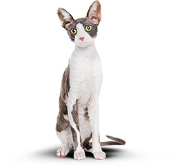
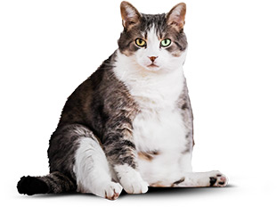
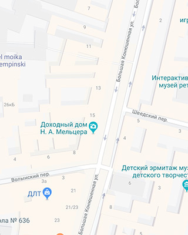

Catenergy
Функциональное питание для котов
Занялся собой? Займись котом!
Подобрать программуПохудение
Ваш кот весит больше собаки и почти утратил способность лазить по деревьям? Пора на диету! Cat Energy Slim поможет вашему питомцу сбросить лишний вес.
Каталог slimНабор массы
Заработать авторитет среди дворовых котов и даже собак? Серия Cat Energy Pro поможет вашему коту нарастить необходимые мышцы!
Каталог proКак это работает
Функциональное питание содержит только полезные питательные вещества.
Выпускается в виде порошка, который нужно лишь залить кипятком и готово.
Замените один-два приема обычной еды на наше функциональное питание.
Уже через месяц наслаждайтесь изменениями к лучшему вашего питомца!
Живой пример
Борис сбросил 5 кг за 2 месяца, просто заменив свой обычный корм на Cat Energy Slim. Отличный результат без изнуряющих тренировок! При этом он не менял своих привычек и по-прежнему спит по 16 часов в день.
5кгснижение веса 60днейзатрачено времениЗатраты на питание: 15 000 руб.
  Было Сталоул. Большая Конюшенная, д. 19/8 Санкт-Петербург
